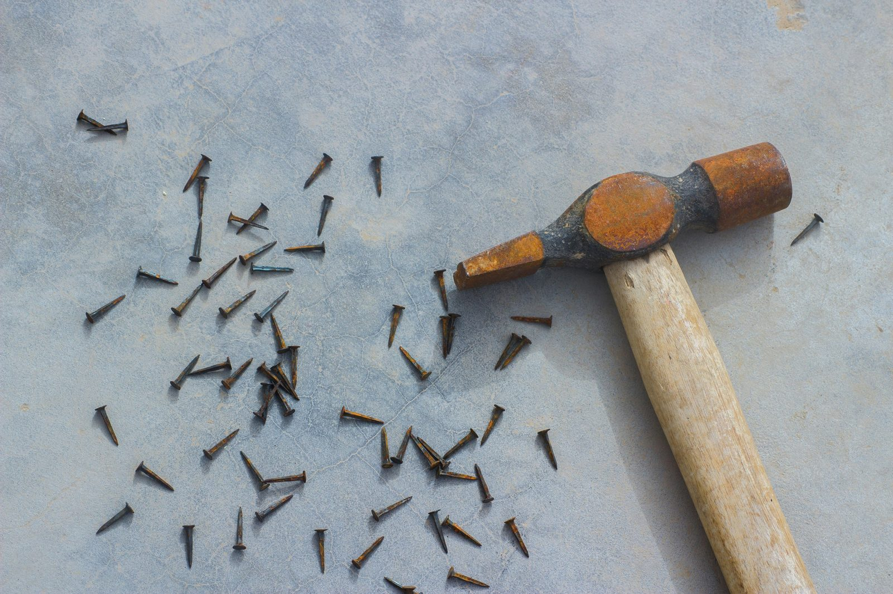

Cosa significa “chiodo scaccia chiodo”? Significa superare un problema o una delusione sostituendolo con qualcosa di nuovo e positivo.
Questo modo di dire si usa quando si vuole indicare che per superare una difficoltà o una sofferenza, è utile concentrarsi su qualcosa di nuovo e coinvolgente. Si può usare quando si consiglia a qualcuno di dimenticare una relazione finita male trovando un nuovo amore o di superare un fallimento professionale iniziando un nuovo progetto.
L'idea alla base di questo detto è che un chiodo vecchio e arrugginito possa essere rimosso solo inserendo un chiodo nuovo e brillante al suo posto. La soluzione è a portata di mano… e martello!
Da non confondere con l’usare il martello! Questo modo di dire sottolinea l'importanza di sostituire il vecchio con il nuovo per poter andare avanti nella vita. È un’espressione molto comune in Italia e viene spesso utilizzata in contesti sia personali che professionali per incoraggiare a superare le difficoltà.
Chiodo scaccia chiodo - Sinonimi e Contrari
Sinonimi
- Sostituire una cosa con un'altra
- Superare una delusione con una nuova esperienza
- Dimenticare attraverso il cambiamento
- Rimpiazzare
Contrari
- Conservare
- Mantenere
- Fissarsi su qualcosa
- Rimanere nello stesso stato
Esercizio
1. Dopo la rottura con Laura, Marco ha iniziato una nuova relazione per dimenticarla. Chiodo scaccia chiodo! Mostra Risposta
Mostra Risposta
Appropriato: Sì, l'espressione è usata correttamente per indicare che Marco ha superato la rottura con una nuova relazione.
2. Ho rotto il vecchio tavolo e ne ho comprato uno nuovo. Chiodo scaccia chiodo!
Mostra Risposta
Non appropriato: No, l'espressione non si adatta a un contesto materiale come l'acquisto di un nuovo tavolo.
3. Dopo aver perso il lavoro, Giovanni ha deciso di avviare una sua attività. Chiodo scaccia chiodo!
Mostra Risposta
Appropriato: Sì, l'espressione è usata correttamente per descrivere come Giovanni ha superato la perdita del lavoro iniziando una nuova attività.

Chiodo scaccia chiodo - Sinonimi e Contrari
Sinonimi
- Rimpiazzare
- Sostituire
- Rimediare
- Compensare
Contrari
- Conservare
- Mantenere
- Preservare
- Tenere
This expression means overcoming a problem or disappointment by replacing it with something new and positive. It is used to suggest that to get over a difficulty or suffering, it is helpful to focus on something new and engaging. You might use it when advising someone to forget a bad relationship by finding a new love or to overcome a professional failure by starting a new project.
The idea behind this saying is that an old, rusty nail can only be removed by driving in a new, shiny nail in its place. The solution is within reach... and a hammer!
Not to be confused with using a hammer! This saying emphasizes the importance of replacing the old with the new to move forward in life. It is a very common expression in Italy and is often used in both personal and professional contexts to encourage overcoming difficulties.